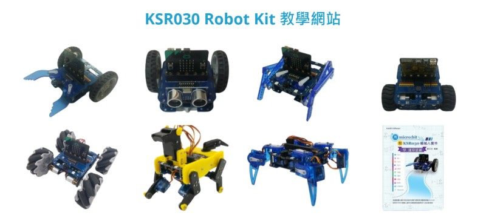

KAISE KSRobot
首頁
入門教學
Arduino IDE
micro:bit MakeCode
ESP32 Arduino 設定
Raspberry Pi Pico Arduino 設定
主控板
Arduino 系列
KSB017 Arduino Nano Board
KSB018 Arduino Micro Board
KSB019 Arduino Leonardo Board
KSB020 Arduino UNO Board
KSB024 Arduino Senesor Board
KSB026 Arduino Servo Board
ESP 系列
PocketCard 系列
硬體簡介
PocketCard 主板
PocketCard Lite 主板
For Arduino
For Scratch3
For Blockly
For MicroPython
PocketCard 擴展板系列
PocketCard Camera 視訊擴展板
PocketCard Audio 音訊擴展板
PocketCard 兼容micro:bit 擴展板
NodeMCU32s-CAM
擴展板
Arduino
KSB001 LCM Keypad Board
KSB002 HC05 Bluetooth Board
KSB004 WIFI RJ45 Net Board
KSB006 Xbee Board
KSB007 Makey Makey Board
KSB008 PS2 Joystick Board
KSB015 L298P Motor Board
KSB016 Senser Board
KSB029 Scratch Sensor Board
KSB030 RJ11 Scratch Sensor Board
KSB031 UNO ProtoShield Breadboard
KSB041 Yilan Sensor Board
micro:bit
KSB034 基礎版
KSB035 CR2032 電池板
KSB036 AAA 電池板
KSB037 馬達板
KSB038 舵機板
KSB039 感測器多功能板
KSB039 IOT 感測器多功能板
KSB040 鋰電池板
KSB042 小車底板
KSB043 IO擴展板
KSB044 oBot 轉micro:bit 轉板
KSB045 搖桿板
KSB046 互動式鋰電池板
KSB048 4路馬達舵機板
KSB047 PWM轉板
KSB057 OLED顯示板
KSB060 IO擴展板 (14500版本)
KSB062 大電流鋰電池板
KSB064 PlayGamer Lite 彩屏遊戲擴展板
KSB065 Home Automation Board 家庭自動化擴展板
KSB065 micro:bit使用說明
KSB065 PocketCard使用說明
KSB065 NodeMcu-32S使用說明
KSB065 Raspberry Pi Pico 使用說明
KSB065 排針腳位
KSB065 指撥開關腳位
KSB065 Camera腳位
KSB068 PlayGamer 大面板 彩屏遊戲機
ESP32
KSB069 ESP32/Pico Motor Board
KSB072 ESP32/Pico to micro:bit Board
Pico
KSB069 ESP32/Pico Motor Board
KSB072 ESP32/Pico to micro:bit Board
套件
自走車
KSR025 N20馬達 自走車
KSR026 TT塑膠馬達 自走車
KSR030 Version A N20馬達 自走車套件
KSR030 Version B 仿生獸 自走車套件
KSR030 Version C 麥克納姆輪 自走車套件
KSR037 小Q 自走車套件
KSR038 小麥積 麥克納姆輪 自走車套件
機械人
KSR011 9自由度 人形機器人 套件
KSR012 4自由度 金屬機械手 套件
KSR017 6自由度 兩足機器人 套件
KSR030 10軸 機械狗 micro:bit套件
KSR030 8軸 機械蜘蛛 micro:bit套件
學習套件
KSR005 Arduino 35合1 模組套件
KSR006 Arduino RFID 門禁套件
KSR013 Arduino UNO 初學者套件
KSR014 Arduino Mega2560 初學者套件
KSR030 12合1 基礎模組套件 （Arduino / micro:bit / ESP32）
KSB039 IOT 物聯網套件 for micro:bit
KSR036 自動澆水套件 for micro:bit
KSR035 貓咪盃全國賽硬體套件 （Arduino / micro:bit / ESP32）
模組
LCM 顯示
LED 發光
人體紅外
儲存類型
測光模組
慣性測量
天氣類型
按鈕開關
時間模組
氣體偵測
測距循跡
溫度濕度
生物識別
磁場霍爾
繼電器類
訊號處理
重量感測
電壓電流
電源模組
音訊模組
馬達驅動
無線通訊
有線通訊
Published with GitBook
KSR030 Version A N20馬達 自走車套件
KSR030 Version A N20馬達 自走車套件
請參考
KSR030 Robot Kit 教學網站
中的
套件組裝
N20馬達小車 組裝
硬體簡介手冊
基礎練習
積木安裝說明
舵機校正
蜂鳴器練習
超音波測距
循跡使用練習
全彩LED練習
紅外遙控練習
直流馬達練習
舵機練習
問與答
小車控制應用
紅外遙控小車
循跡自走車
避障自走車
追光自走車
RF 遙控小車

results matching "
"
No results matching "
"